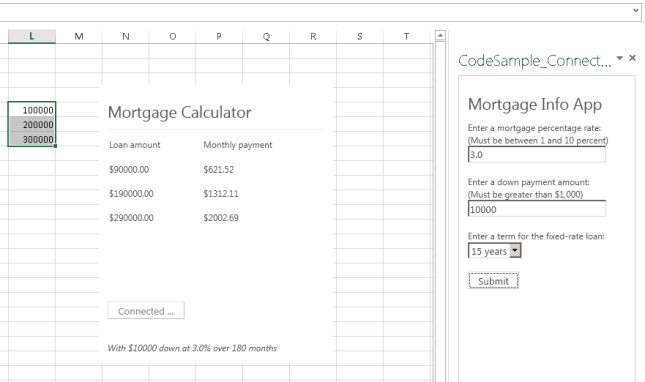

The code in the task pane app for Excel demonstrates how to build a simple user interface that saves data to cross-session web browser storage (localStorage). It also shows how to use a dynamically generated div to surface errors
to the user.
The code in the content app for Excel demonstrates how to detect when the selection in the spreadsheet changes, how to get the data selected after that event, and how to monitor the shared data source for changes. It captures
the data from the spreadsheet in an array, evaluates the spreadsheet data with the data from the task pane app, and then displays the results in a table.

The content app also displays some best practices around how to use a dynamically-applied CSS to modify the behavior of the UI.
Prerequisites
This sample requires the following:
- Excel 2013.
- Visual Studio 2012, apps for Office project templates.
- Internet Explorer 9 or Internet Explorer 10 Preview.
- Basic familiarity with JavaScript, CSS, jQuery, and HTML5.
Key components of the sample
The Apps for Office: Enable communication between apps sample app contains the following important files:
- CodeSample_ConnectedApps project, including:
- CodeSample_ConnectedApps.xml manifest
- CodeSample_ConnectedApps.js file
- CodeSample_ConnectedApps.html file
- toast.js file
- CodeSample_ConsumerApp project, including:
- CodeSample_ConsumerApp.xml manifest
- CodeSample_ConsumerApp.js file
- CodeSample_ConsumerApp.html file
- MortgageCalculator.js file
- App.css file
Configure the sample
No additional configuration is necessary to run the sample.
Build the sample
Choose the F5 key to build and deploy the apps.
Run and test the sample
- Choose the F5 key to build and deploy the apps.
Two instances of Excel 2013 will open, one with the content app (“Mortgage Calculator”) displayed and the other with the task pane app (“Mortgage Info App”) displayed.
- In one of the two instances of Excel 2013, on the
Insert tab, in the Apps for Office group, choose the arrow below
App, and then choose the app that you want to insert.
The other app will be inserted into the current instance of Excel. Both apps should now be inserted in the same Excel session.
- In the content app (“Mortgage Calculator”), choose
Connect to Data to establish a connection between the two apps (listening for changes in the data source).
- In the task pane app, enter numbers into the two text box inputs and select an option from the drop-down list. Choose the
Submit button when you have entered your data.
- In the Excel spreadsheet, enter numbers into one or more rows in a single column. Select the rows singly or as a range in a single column.
Troubleshooting
If the app fails to install, ensure that the
SourceLocation element in the CodeSample_ConnectedApps.xml and CodeSample_ConsumerApp.xml files has the correct URL value for the DefaultValue attribute.
Related content